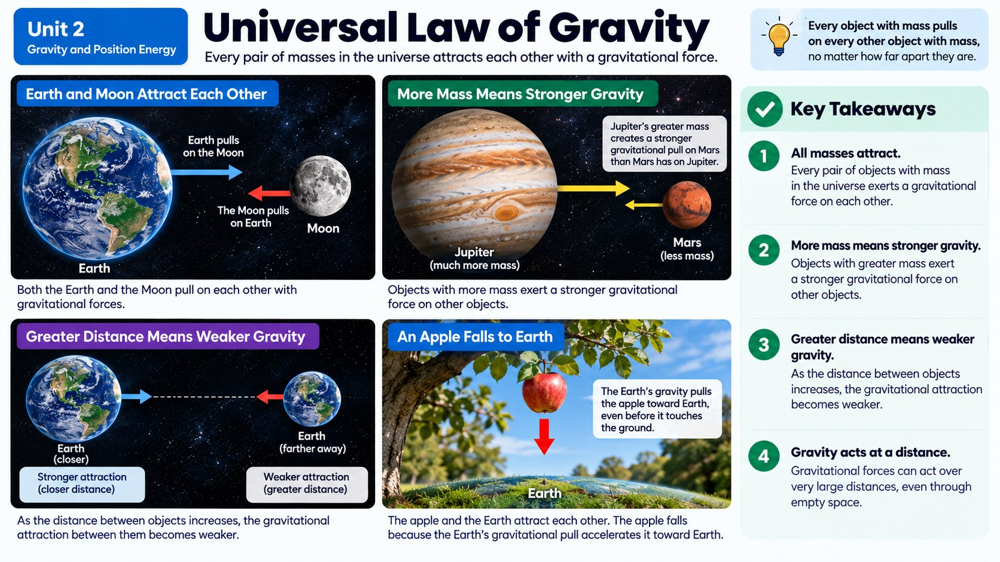

Every falling object near Earth speeds up at the exact same rate, so why doesn't gravity pull on a feather and a bowling ball with the exact same force?

A Pull With No Strings Attached
Gravity is strange when you really think about it. It's a force, which means it can push or pull objects, yet it never needs to touch anything to do its job. The Moon orbits Earth without any rope connecting them, and you're pulled toward the ground without anything physically grabbing you. Scientists describe this by saying gravity acts at a distance, and it always pulls objects together. Gravity never pushes things apart; it only attracts.
Here's another key rule: gravity requires at least two objects. It doesn't make sense to talk about the gravity of a single object all by itself in empty space with nothing else around. Gravity is always a relationship between two masses pulling on each other, even if one of them, like Earth, is doing almost all of the noticeable pulling.
More Mass, More Force. More Distance, Less Force.
Even though gravity is a universal force acting between literally any two objects with mass, it doesn't pull on everything with equal strength. Two things change how strong the force of gravity is between objects. The first is mass: the more mass two objects have, the stronger the gravitational force pulling them together. That's why Earth's gravity noticeably affects you, but your gravity and your friend's gravity pulling on each other is far too tiny to ever feel.
The second factor is distance. The farther apart two objects are, the weaker the gravitational force between them becomes. Move two objects twice as far apart, and the force drops off fast. This means gravity has an inverse relationship with distance: as distance goes up, force goes down. Put mass and distance together, and you can explain why planets, stars, and moons produce gravity strong enough to notice, while two backpacks sites next to each other on a desk don't visibly attract each other at all.
This distance effect is actually stronger than a simple inverse relationship: it's what scientists call an inverse-square relationship. That means if you double the distance between two objects, the gravitational force between them doesn't just cut in half, it drops all the way to one-fourth of its original strength. Triple the distance, and the force falls to just one-ninth. This is exactly why a satellite orbiting close to Earth feels a much stronger gravitational pull than a satellite far out near the Moon's orbit, even though Earth's mass hasn't changed at all, only the distance has.
Same Acceleration, Different Force
Here's a detail that confuses a lot of people: near Earth's surface, gravity accelerates every object at the same rate, about 9.8 meters per second every second, regardless of mass. Drop a bowling ball and a marble at the same instant in a vacuum, and they hit the ground at the same time. That seems to contradict the idea that mass matters, but it doesn't. The force of gravity pulling on the bowling ball actually is bigger than the force pulling on the marble, but the bowling ball also has more mass to move, and those two effects cancel out perfectly, leaving the same acceleration for both.
Outside of a vacuum, though, things look different. Drop a feather and a bowling ball in a regular room, and the bowling ball wins easily. That's not because gravity treats them differently, it's because of air resistance and surface area. A feather has a large surface area for its tiny mass, so air pushes back against it much more, slowing its fall dramatically. A tightly balled-up piece of paper falls faster than a flat sheet of the same paper for exactly this reason.
Think of it this way: gravity pulls twice as hard on an object with twice the mass, but that object also takes twice as much force to speed it up at all, since more massive objects resist changes in motion more strongly. Those two doublings cancel each other out perfectly, which is why a bowling ball and a marble, dropped together with no air in the way, hit the ground at the exact same moment despite the very different forces gravity exerts on each of them.
Fields and Force Diagrams
So how does gravity reach across empty space without touching anything? Scientists explain this using the idea of a field, an invisible region of influence that surrounds any object with mass. Earth's gravitational field fills the space around our planet, and any object that enters that field feels a pull toward Earth's center, even though nothing is physically connecting them. Electric charges and magnets create their own kinds of fields too, which is why magnets can attract metal from across a table without touching it.
Scientists and engineers often draw force diagrams to show these invisible pulls visually. An arrow represents a force, pointing in the direction the force acts, with a longer arrow meaning a stronger force. If you drew a force diagram of Earth pulling on the Moon compared to Earth pulling on a satellite much closer by, the arrow toward the closer satellite would generally need to reflect the different distances and masses involved.
Mass vs. Weight: Why You'd Weigh Less on the Moon
Here's a mix-up almost everyone makes at some point: confusing mass and weight. Mass measures how much matter is packed into an object, and it never changes no matter where that object travels in the universe. Weight, on the other hand, is actually a measurement of the force of gravity pulling on that mass, and it absolutely can change depending on location. A 10-kilogram object always has 10 kilograms of mass, whether it's sitting in your living room or floating near Jupiter. But that same object would weigh about 98 Newtons on Earth (10 kilograms x 9.8 m/s2), while on the Moon, where gravity is only about one-sixth as strong, it would weigh only around 16 Newtons.
This is exactly why astronauts can bound across the lunar surface in giant leaps despite wearing bulky spacesuits: their mass hasn't changed one bit, but the Moon's much smaller mass produces much weaker gravity, and therefore much less weight pulling them down. If you ever see a scale reading in kilograms, it's technically reporting mass, since a truly precise weight reading would be given in Newtons and would change dramatically depending on which planet, or moon, you happened to be standing on.
Real-World Connections
Gravity-Assist Space Missions
NASA has sent spacecraft like Voyager 1 on flybys of massive planets like Jupiter specifically to use the planet's gravity to slingshot the spacecraft to higher speeds, saving enormous amounts of fuel.
Why the Moon Doesn't Fall on Us
The Moon is constantly falling toward Earth due to gravity, but it's also moving sideways fast enough that it keeps missing, resulting in the orbit we see every night.
Meet the Scientist
Orbital Mechanics Engineers (Astrodynamicists)
These specialists calculate the exact paths spacecraft need to follow by accounting for the gravitational pull of the Sun, Earth, Moon, and other planets. A tiny miscalculation in these gravity equations could send a multi-million-dollar spacecraft missing its target by thousands of miles.
Key Vocabulary
Bold, underlined words in the reading above are clickable too: tap one to see its definition pop out. Or click or tap a card below to reveal the definition.
Explore More
Chapter Review
1. Which statement correctly describes gravity between any two objects in the universe?
2. Planet X and Planet Y have identical masses, but Planet Y is twice as far from a nearby star as Planet X. How does the star's gravitational pull on each planet compare?
3. A hammer and a feather are dropped at the same time on the surface of the Moon, where there is no air. What happens?
4. Why don't two students sitting next to each other in class notice any gravitational pull between them?
5. A crumpled piece of paper and a flat sheet of the exact same paper are dropped from the same height in a normal room. What is the best explanation for why the crumpled paper lands first?
California Science Test (CAST) Practice
A science team measures the relative strength of gravitational attraction between a space probe and a planet at several different distances from the planet's center. Their measurements are shown in the table below, using a relative force scale where the closest distance is set to 100.
| Distance (relative units) | Relative Gravitational Force |
|---|---|
| 1 | 100 |
| 2 | 25 |
| 3 | 11 |
| 4 | 6 |
Which claim is best supported by the data in the table?